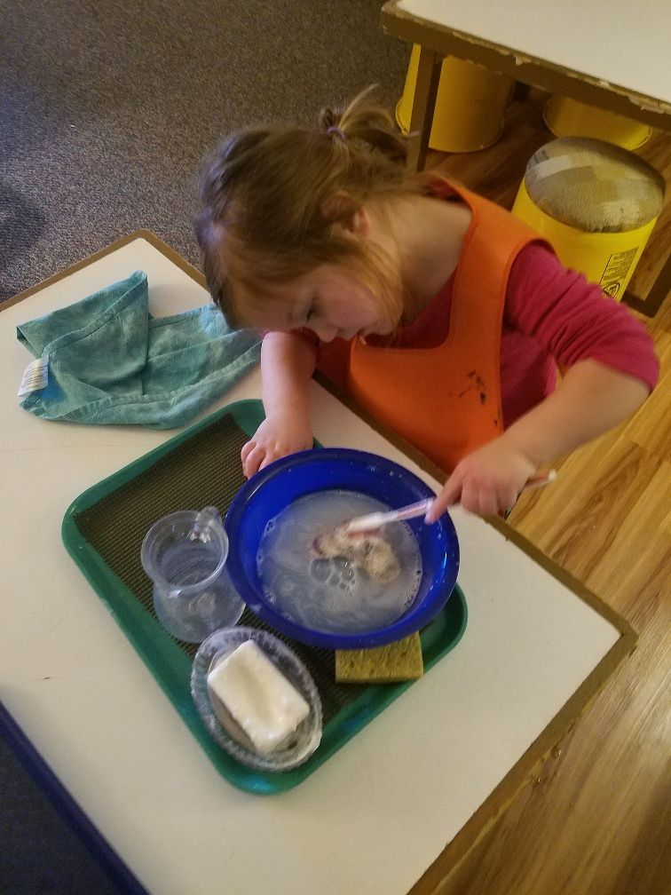

Primary (Ages: 21⁄2 - 6)
We strive to provide your child with the hands-on learning and support their need to have the very best opportunity to thrive. Multi-age classrooms allow the children at various stages of 2 ½ - 6 years old to learn from and with each other. Children in this age group are drawn to be independent, strong, and build focus and concentration.

